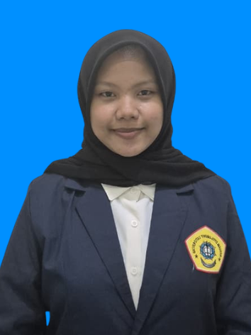

|
 |
Nama | Tri Widia Riandiva |
| T nelepon | 0895378596677 | |
| rdtriwidia@gmail.com | ||
| Alamat | JL. Trunojoyo IX Bangkalan, Jawa Timur | |
| Deskripsi Diri | Saya adalah mahasiswi S1 Sistem Informasi di Universitas Trunodjoyo Madura yang memiliki minat besar pada pengembangan sistem informasi, desain web, dan optimasi workflow digital. |
| SMA | SMAN 1 Bangkalan |
| Jurusan | IPA & IPS |
| Prestasi | Juara 3 Pentas Seni Saka Bahari |
| Tahun Masuk | 2022 |
| Universitas | Universitas Trunojoyo Madura |
| Jurusan | Sistem Informasi |
| Prestasi | - |
| Tahun Masuk | 2025 |
| Perusahaan | - |
| Deskripsi | - |
| Periode | - |
| Jobdesk | - |
| Organisasi | Dewan Ambalan SMAN 01 Bangkalan |
| Deskripsi | Bagian dari kepengurusan Dewan Ambalan yang bertugas mengelola komunikasi internal dan eksternal, serta publikasi kegiatan |
| Divisi | Humas & Kominfo |
| Periode | 2024-2025 |
| Jobdesk |
|